先日に続き、ダストクーラーボックスの修理をやっています。前回は、ジャンクの８cmファン付きヒートシンクに２段のペルチェ素子を１２Vと５Vで駆動させ −１℃ を達成できました。
次なる作業は、仮組みするため電源を周りの収まりをなんとかします。
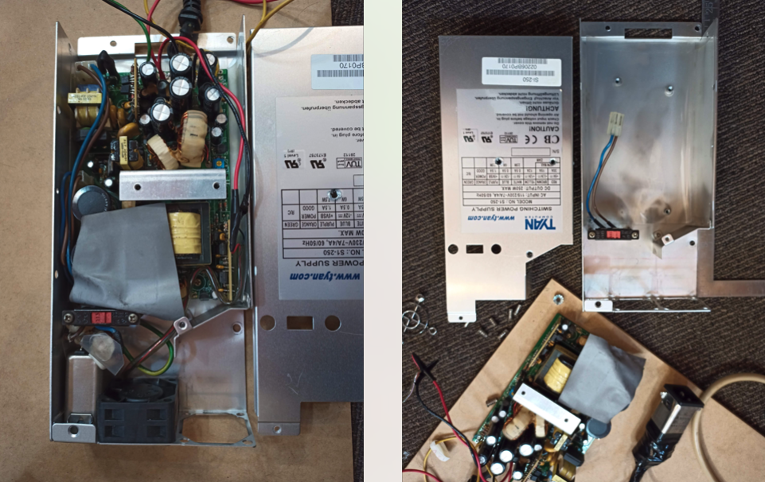
ダストボックスにこの１Uサーバ電源を入れるためには、長さを3.5cm切り詰める必要があります。一度、電源をバラして詰められそうな部分を短くします。
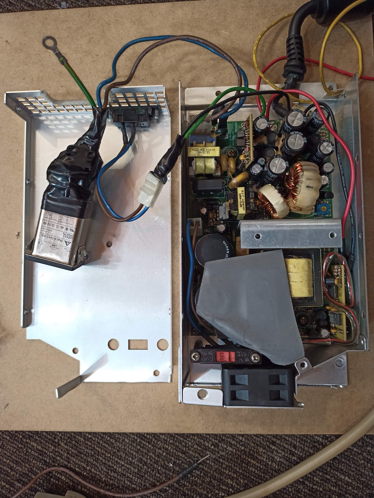
AC電源入力部分をざっくりと外だしにしてケースを切りました。これで3.5cm以上は短くなったので、ダストボックスに横置きできるようになりました。
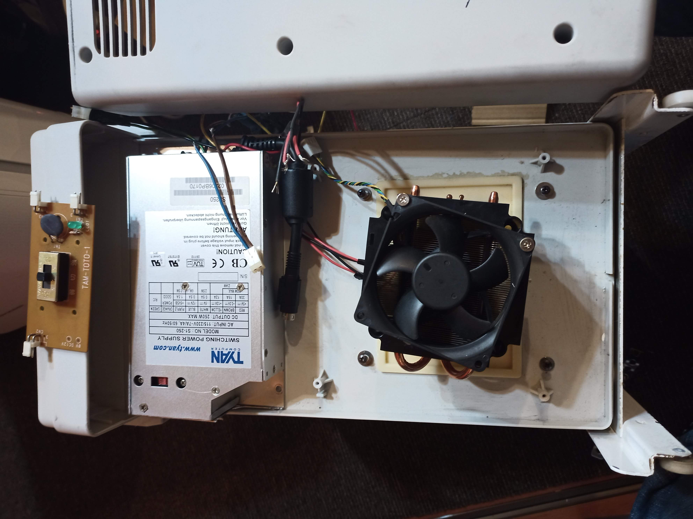
配線周りをやって、この状態で中がどのくらい冷えるか確認しました。すると、写真はないですが約16℃くらいです。前回は22度だったのでだいぶ前進しましたが、10度くらいにはなって欲しいのでさらなる検討が必要です。
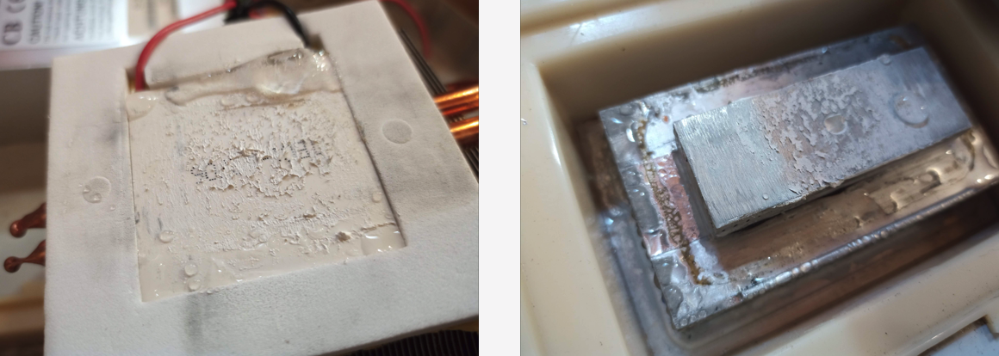
さらに冷やすためには、冷却側の金属接地面積を増やすのと、発熱側をさらに冷やすことの２つの戦略がありそうですね。冷却側は明らかに、接地面積が足りず結露の氷がペルチェ素子側にあります。
発熱側は、もう少し高性能なヒートシンクがあれば理論的に、もっと冷やせるはずです。そういえば、JunkなiMacG5があるのを思い出して引っ張り出してきました。
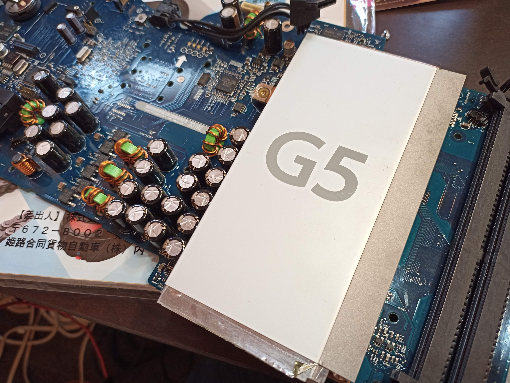
このヒートシンクはたぶん、銅製だったはずです。中を開けて確認。
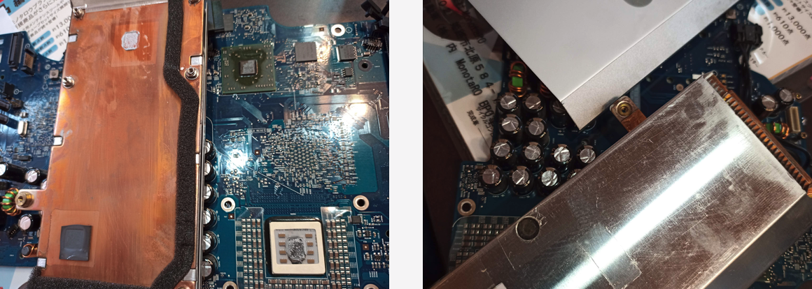
はい！ 銅製で、かなり重いです。このヒートシンクのほうが熱が伝わりやすいので今のジャンクファンより、このiMacG5のジャンクファンのが冷えるはず。
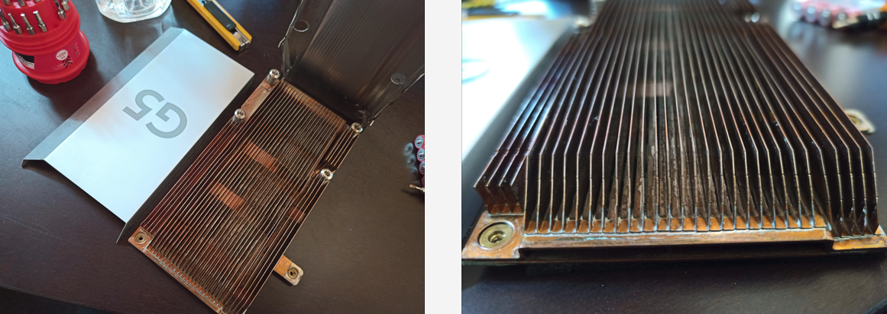
ということで、実験してみましょう。前回と同じ環境で、ヒートシンクだけ変えています。表面温度が安定する温度を計測します。
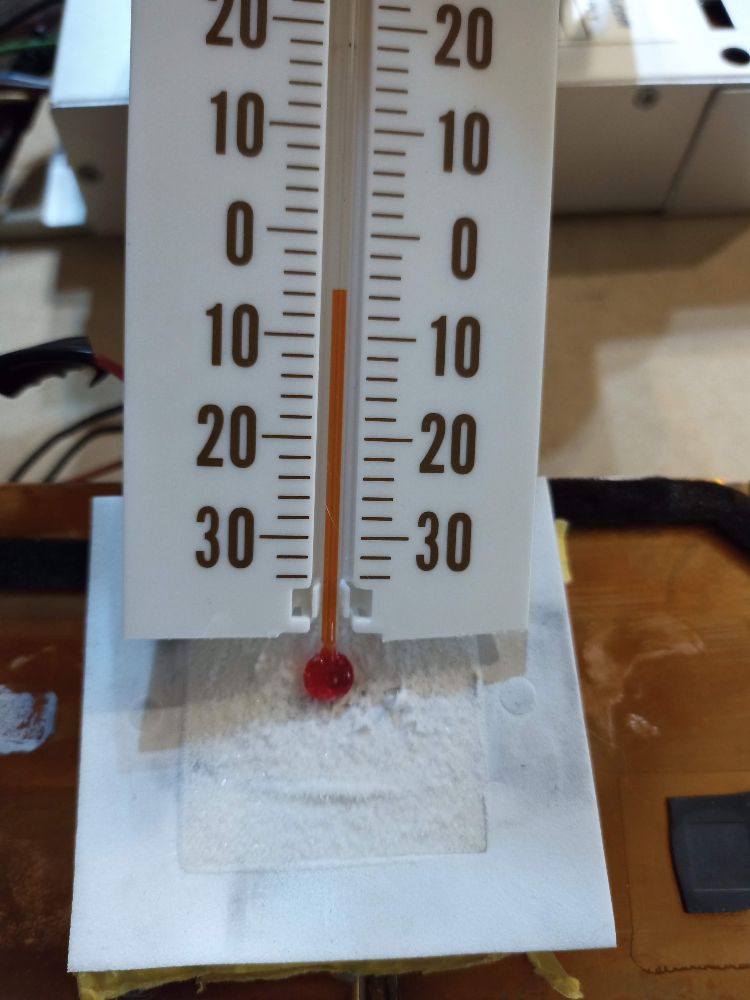
！！ 前回は、−1℃で安定していたのが、今回は−5度くらいで安定しています。さすが、銅製ですね。発熱側の熱を効率よく解放することでここまで下がるんですね！
では、実際に仮組みして、ダストボックスの中がどのくらい冷えるか確認してみます。
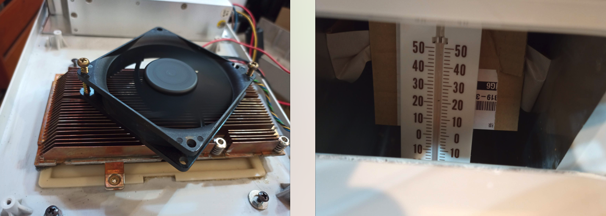
ファンはシロッコファンみたいなのでヒートシンクにカバーをしたほうが良さそうですが、まずはざっくりこの状態で。ダストボックスの中の温度は少し見えにくいですが約10℃になっています。家庭用冷蔵庫とほぼ同じ温度です。銅製のヒートシンクに変えることで 6℃ 下がりました。
次は、冷却面を考えることにします。まずは、ペルチェ素子の面を全部金属に接地させるために、今まで使っていたジャンクのヒートシンクをバラして銅部分だけ使うことにしてみます。
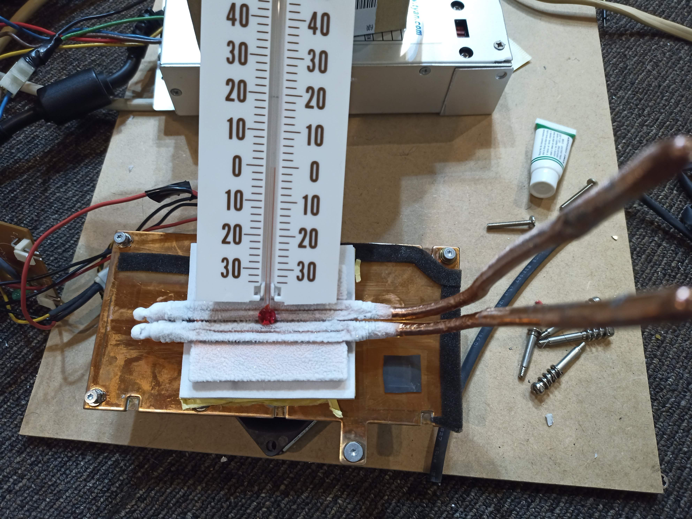
まだ加工は途中ですが、銅のヒートパイプ部分をアルミブロックの脇を通りダストボックスの中まで貫通させるイメージです。表面温度は0度で凍結していますね。
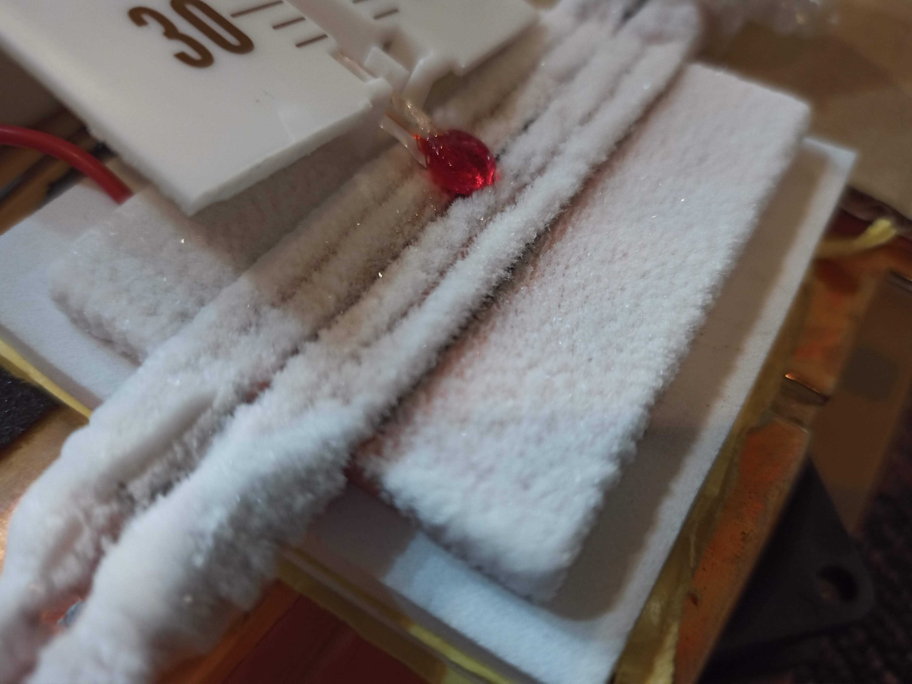
ヒートパイプもペルチェ素子付近は凍結していますが、パイプの先までは冷気が逃げるようで無理でした。冷却面をシリコンシーラントで断熱すれば良いのかもしれません。銅ブロックをアルミブロックの代わりに使えばもっと効率がいいのかもしれません。要課題です。
冷却側はいかに、熱を逃さないようにするか断熱が課題ですね。こうして作ってみると、冷凍庫の冷却システムってすごいですね！
ダストボックスとしては実用温度に達しているので、そろそろ実験も終えて運用できるように組み付けを考えないとですね。ちなみに、この構成の消費電力は、約８０Wです。
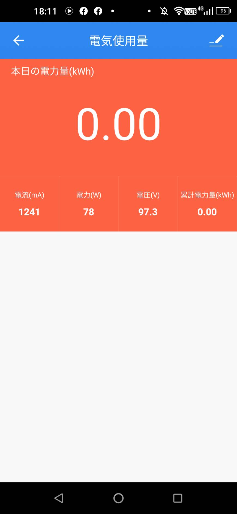
1ヶ月の電気代は、約1500円
生ゴミを臭わなくする価値が１ヶ月1500円に見合うかどうかですね。50Wくらいだと嬉しいんですが、２段にしているので今のシステムだと仕方ないですかね。
次回は、冷却面を完成させて組み込み実運用できればと思います。ダストボックスはそろそろ限界が見えてきたので、バイクの色を塗りたいです。